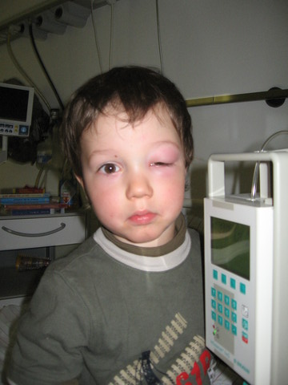

doktoren.
Nachdem wir wegen Frederiks Aug im Krankenhaus gewesen waren hatten wir natürlich am Ende einen Arztbrief mitbekommen, und den Auftrag ein paar Tage später zu einem niedergelassenen Arzt zur Kontrolle zu gehn. Einerseits zum Kinderarzt wegen seiner Hand und dem Aug und insgesamt, zweitens auch zu einem Augenarzt wegen dem Aug eben.
Wir waren dann zwei Tage nach der Entlassung bei unsrer normalen Kinderarztpraxis, wo, das sollte man dazusagen, normalerweise nicht eine "Medikamente sind böse"-Meinung vorherrscht, sondern das sind schon ganz normale "Schulmediziner" (wie man so sagt). (und das find ich auch gut so, nur nebenbei bemerkt). Jedenfalls hat die Ärztin den Arztbrief gelesen, wo eben drinstand dass Frederik eine Augenlid-Phlegmone hatte, und dass in seinem Blut keine Entzündungswerte feststellbar gewesen waren. Der Oberarzt hatte uns das so erklärt, dass das heisst dass sich die Entzündung nicht ausgebreitet hatte sondern nur lokal vorhanden war und dass das auch bedeutet, dass sie von einer lokalen Infektion (zB durch Insektenbiss) ausgelöst worden war. Als Laie muss ich das erstmal glauben.
Nach Lektüre des Arztbriefs hat die Kinderärztin gemeint, dass wenn keine Entzündungswerte vorlagen und er kein Fieber hatte offensichtlich keine Phlegmone vorlag und dass da wohl ein junger Kollege Wochenend-Dienst hatte, der ein bissl überreagiert hat, dass wir jedenfalls das orale Antibiotikum absetzen sollen (weils eh nur grauslich ist) und dass das bei kleinen Kindern immer so aussieht, wenn sie am Aug einen Mückenbiss haben. Der wäre, so die Ärztin, auch ohne Antibiotika wieder abgeschwollen.
Ja, und da soll man jetzt als Laie entscheiden, wem man glauben will. Ich meine Arzt X sagt A, Arzt Y sagt B, die einzige Entscheidungsgrundlage, die ich habe, ist welchen von den beiden ich schon länger kenne und daher weiss, wie oft der sonst richtig/falsch liegt. Bei der Ärztin wissen wir, dass sie normalerweise schon schnell Antibiotika gibt, insofern haben wir ihre Aussage ernst genommen (wenn das anders wäre wärs anders. schöner Satz.)
Das jedenfalls dazu.
Und zum Abschluss noch ein "währenddessen"-Bild von Frederik, wie er im Krankenhaus ausgesehen hat. Da war das Aug schon wieder ein bissl offen.
